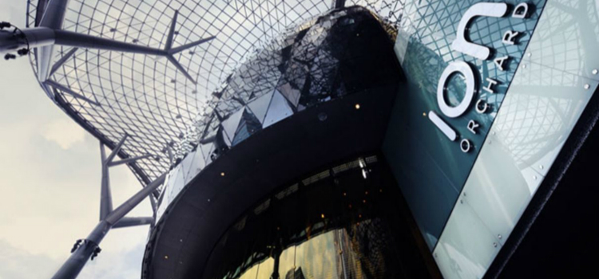

除了体验异国美食和风情文化，新加坡更是国际名牌聚集的潮流购物商场和大众特色的摊档市集都齐备的购物圣地。
大型购物商场和百货公司
随着中国游客出境游的风潮，不少国家都意识到其强大的购买力，纷纷出招招徕更多中国客人。新加坡的大型商场也不断提升对中国来客的服务质量，包括中文服务和倾向于国内的支付方式，如支付宝。如果想尽情享受狂购大牌的快感，可以在几个主要商业区的大型商场满载而归。
ION Orchard 购物中心
外观气派堂皇，设计与理念时尚前卫，俨然已是附近零售商区的“重心”。 这里汇聚世界最受欢迎品牌的旗舰店、概念店和生活馆，八层购物空间设计巧妙（地上四层，地下四层），总零售面积达66,000 平方米，位于新加坡商业购物主干线的黄金地段。游客在这里可以享受独特的购物体验：300 多家零售、餐饮和娱乐店，其中乌节路沿街将设立六家世界顶级奢侈品品牌的双楼层特色旗舰店，同时还会精选兼具强大品牌影响力和新颖零售理念的国际品牌和潮流街头时尚生活馆入驻。除琳琅满目的品牌之外，游客们还可在美食广场享受丰富的美食盛宴，从地方风味到各国佳肴，菜品众多，无所不包。

网站：http://www.ionorchard.com/cn/
地址：2 Orchard Turn Singapore 238801
前往方式：乌节地铁站
营业时间：10am – 10pm
百丽宫 (Paragon)
时代的气息，时尚的宫殿。位于新加坡著名的乌节路中心，是间独特又富现代感的购物中心，百利宫拥有6层楼和200家店铺。时尚潮流的集中地，国际时尚名牌如Gucci、Valentino、Versace都可以在这里找到。

网站：https://www.paragon.com.sg/zh
地址：290 Orchard Turn Singapore 238801
前往方式：乌节地铁站 Orchard MRT Station，代号NS22/TE14（南北线及兴建中的汤申－东海岸线）
营业时间：10am – 10pm
滨海湾金沙购物商城
奢华品牌的最大汇集地，超过170 个奢华品及高端品牌旗舰店、复式商铺或三层商铺。知名品牌如Bottega Veneta、Chaumet、Parmigiani、Fleurier和Roger Dubuis还专为这里的商铺特别设计了限量版商品。
网站：http://www.marinabaysands.com/
地址：10 Bayfront Avenue
前往方式：海湾舫地铁站 Bayfront MRT Station (CE1/DT16)
营业时间：10am – 10pm
怡丰城 (VivoCity)
新加坡规模最大的购物中心之一，商品种类包罗万有，选择面向多而广，全家男女老幼都可找到符合其需求的商铺。也有一些品牌是怡丰城独家引进的，如 SuperDry、American Eagle Outfitters 和 Weekends。购物之余，您还可在宽敞的滨海露天空间漫步，还有多种适合儿童游乐的设施和水上空中乐园。入驻怡丰城的品牌包括 Forever 21、GAP、Factorie 和 H&M，如果您想选购一些物美价廉的休闲装扮，这里就是您的理想之选。来自日本的大创 (Daiso) 百货，全场标价 2 新元。
网站：http://www.vivocity.com.sg/
地址：1 HarbourFront Walk, Singapore 098585
前往方式：港湾地铁站HarbourFront MRT Station，代号NE1/CC29（东北线与环线）
营业时间：10am – 10pm
罗敏申 (Robinsons)
已经有一百多年历史的老字号，前身是英国最受欢迎的马莎百货公司，多次改造后现在有地面5层+地下1层的超大购物空间。罗敏申有自家独有的特殊货源，在售中近一半商品都只在罗敏申独家出售，值得一淘。
网站：https://www.paragon.com.sg/zh
地址：290 Orchard Turn Singapore 238801
前往方式：乌节地铁站 Orchard MRT Station，代号NS22/TE14（南北线及兴建中的汤申－东海岸线）
营业时间：10am – 10pm
诗家董 (TANGS)
由华人百货业的先驱于1958年创立的新加坡历史最悠久的购物中心，与时俱进不断顺应零售业的潮流做出更多的突破与提升。
网站：https://www.paragon.com.sg/zh
地址：290 Orchard Turn Singapore 238801
前往方式：乌节地铁站 Orchard MRT Station，代号NS22/TE14（南北线及兴建中的汤申－东海岸线）
营业时间：10am – 10pm
义安城
由义安城和高岛屋两间百货组合成的一座大型购物中心，日式商品齐全，其中拥有东南亚最大的LV旗舰店以及占地面积达到40,000平方英尺的东南亚最大书店纪伊国屋书店。
网站：https://thengeeannkongsi.com.sg/zh/
地址：391 Orchard Turn Singapore 238801
前往方式：乌节地铁站 Orchard MRT Station，代号NS22/TE14（南北线及兴建中的汤申－东海岸线）
营业时间：10am – 10pm
IMM
新加坡最大的品牌折扣商场，超过 80 家折扣店全年提供惊喜折扣特别适合对品牌折扣情有独钟的旅客们。无论是Adidas或Timberland等运动品牌， 还是Agnès B 或 Coach等轻奢品牌都有令人心动不已的优惠折扣。
地址：IMM Building 2 Jurong East Street 21 Singapore 609601
前往方式：裕廊东地铁站 Jurong East MRT Station，代号NS1／EW24（南北线及新加坡地铁东西线）
Big Box
新加坡规模最大的仓储式零售百货，日用杂货、个人护理、健康产品、家具布置、电子产品或婴儿用品等一律工厂直销价发售。
地址：1 Venture Avenue, Singapore 608521
前往方式：裕廊东地铁站 Jurong East MRT Station，代号NS1／EW24（南北线及新加坡地铁东西线）
特色商铺市集和主题购物街
不崇尚高端大牌的朋友们一样能在新加坡充分享受购物乐趣，想要物美价廉的好货就一定要关注下面的推荐啦。
慕斯达发中心 (Mustafa Centre)
全年 365 天 24 小时不间断营业的大型超市，附属服务还包括货币兑换、签证办理、机票旅行产品等，出售食物电子产品黄金珠宝玩具等等，只要你能想到的商品基本都能在找到，选择困难症的朋友们会挑花了眼，可以找到很多价格实惠的产品，但注意周末晚上等高峰时段人会很多。
地址：145 Syed Alwi Road Singapore 207704
前往方式：小印度地铁站 Little India MRT Station，代号NE7/DT12（东北线站及滨海市区线）
城市购物中心 (City Plaza)
在新加坡历史上著名的游乐场所“新世界”旧址上，新加坡的第一个生态商场，本地人爱逛的平价购物地，还有美食广场和小型游乐场。很多网店服装和配饰都是在这里进货的，还有平价的二手物品。
网站：https://www.citysquaremall.com.sg/
地址：810 Geylang Road Singapore 409286
前往方式：花拉公园地铁站 Farrer Park MRT Station，代号NE8（东北线）
女皇道购物中心 (Queensway Shopping Centre)
购买体育用品热门地，过季和旧款的运动服饰，还有健身用品等。
网站：https://www.queenswayshopping.sg/
地址：1 Queensway Singapore 149053
前往方式：女皇镇地铁站Queenstown MRT Station，代号EW19（东西线）
幸运商业中心 Lucky Plaza
搜刮平价珠宝首饰，手表配饰，服装等的去处。
网站：http://www.luckyplaza.com.sg/
地址：304 Orchard Rd, Singapore 238863
前往方式：乌节地铁站Orchard MRT Station，代号NS22/TE14（南北线及兴建中的汤申－东海岸线）
远东商业中心 Far East Plaza
平价服饰，水疗按摩，做发型等去处。
网站：http://www.fareastplaza.com.sg/
地址：14 Scotts Road Singapore 228213
前往方式：乌节地铁站 Orchard MRT Station，代号NS22/TE14（南北线及兴建中的汤申－东海岸线）
哈芝巷 (Haji Lane)
融汇复古时尚、本土品牌和独特新品，充满活力和色彩的个性购物地。可以到Mondays Off、Soon Lee和Modparade等特色店铺淘小饰品和设计大胆的服饰。
前往方式：武吉士地铁站 Bugis MRT Station，代号EW12/DT14（东西线和地铁滨海市区线）
阿拉伯街 (Arab Street)
可以搜刮到具有异域风情的物品，例如Royal Fabrics 有马来和印尼峇迪手工布（色彩丰泽、花纹精致的布匹）等惹人喜爱的物品；Jamal Kazura Aromatics 有香味迷人的香精油（阿拉伯香精油）。
前往方式：武吉士地铁站 Bugis MRT Station，代号EW12/DT14（东西线和地铁滨海市区线）
空间市场 (*SCAPE Marketplace)
新加坡最大的露天跳蚤市场之一，每周五、周六、周日和公众假期的中午 12 点到晚上 10 点开市，出售时尚漂亮小饰品，价格低廉的服装和精美手工艺品等。
网站：http://www.dukesbazaars.com/
地址：乌节路，Cathay Cineleisure和the Meritus Mandarin Hotel旁边.
前往方式：乌节地铁站 Orchard MRT Station，代号NS22/TE14（南北线及兴建中的汤申－东海岸线）
本地时尚品牌
Charles & Keith
于 1996 年创立，常被称为“小CK”以区分于Calvin Klein，时尚潮流且价格实惠的女性鞋履和配饰品牌，全球超过五百间分店。
网站：http://www.charleskeith.com/
Ong Shunmugam
由新加坡著名设计师素娟 (Priscilla Shunmugam) 所创立的本地品牌，充分汲取本土灵感，巧妙地将传统的民族服饰，如旗袍（一种中式修身裙），与现代的时尚创意加以糅合。
Ashley Isham
以伦敦为基地的新加坡本土设计师 Ashley Isham ，专门设计耀眼夺目的靓丽时装，克里斯蒂娜·阿奎莱拉 (Christina Aguilera) 和 Lady Gaga 都对其设计青睐有加
网站：http://www.aibyashleyisham.com/
Kwanpen
奢华手袋品牌 Kwanpen，必会为您的时尚装扮增添一抹亮丽色彩。该品牌拥有众多精美的皮革制品系列，其中当然不乏其遍布世界时尚都市精品店的特有鳄鱼皮手袋。
Ed Et Al
由鞋匠兼设计师 Edwin Neo 开设，堪称男装时尚典范。他擅长量身定做男士时装鞋，所有商品均采用出色的手工艺以上等原料制作而成。
Kevin Seah
K 是新加坡款式最丰富的时装定制店之一，致力于提供真正永恒的精品。
Carrie K
精致配饰品牌，由擅长制作精美手工艺品的艺术首饰设计师 Carolyn Kan 所创立。
网站：https://www.carriekrocks.com/
特色礼品
虎标万金油
祛除各类疼痛的万灵中草药膏是由中医师 Aw Chu Kin 于 19 世纪 70 年代首创的，居家旅行的必备良药，送人自用两皆宜。新加坡各大药店均有出售，屈臣氏 (Watsons)、新加坡樟宜机场 3 号航站楼 #B2-24 门店。
TWG Tea 茶
贩卖源自世界各地的八百多种精品茶叶的高端品牌，推荐罐新加坡早餐茶 (Singapore Breakfast Tea)。TWG Tea 各大门店包括滨海湾金沙购物商场 #B2-89 或 #B2-65，ION Orchard #02-21，新加坡樟宜机场 2 号航站楼 #026-102- 01 门店等。
肉干 (Bak Kwa)
家喻户晓的美珍香 (Bee Cheng Hiang)烟熏烤肉干是一种深受大众欢迎的本地小吃。Bugis Village 武吉士村、 Nex 购物中心、Takashimaya 高岛屋购物中心等地的美珍香门店和新加坡樟宜机场 1 号航站楼 #02-40 (Departure/ Transit West)。
辣椒螃蟹
相信不少热爱美食的朋友都会有想将当地佳肴带回家或分享给朋友的想法又苦于无法携带，而新加坡著名的海鲜餐馆“螃蟹之家”实龙岗分店和榜鹅分店出品的辣椒螃蟹有真空包装出售，保温袋可保持24 小时不变质，能在冰箱保存6 个月，微波炉加热 5到7分钟即可食用。
榴莲
热带水果无法直接带出境，加工后的果干又少了风味，可以考虑新加坡著名榴梿店 “818 榴梿”出品的真空榴莲和榴梿泡芙和薄饼等制品。
糕饼
新加坡著名的老字号糕饼店梭罗河（Bengawan Solo）和泰茂栈，也深受海外游客的垂青，特别推荐梭罗河的千层糕（Kueh Lapis）、海绵蛋糕和黄梨塔，以及泰茂栈各类创新口味的豆沙饼。
酱料和汤料包
出色的料理都少不了精心调制的调味料升华，新加坡品牌百胜厨（PrimaTaste）出品的酱料和调味粉，例如辣椒螃蟹、叻沙、咖喱和海南鸡饭等，许老字号肉骨茶餐馆像 “松发” 、“榕城” 和 “发起人” 等近年来也研发了可携带包装的肉骨茶汤包，让你回国之后也能做出正宗的新加坡风味。
退税
享受游客退税的资格
新加坡执行 7% 消费税 (Goods and Services Tax), 来访的游客如果在参与“消费税退税”计划的商店消费 100 新元以上，就可申请退税。若要了解某家店铺是否参加了游客退税计划，请留意店内是否贴有“免税”购物标识或牌子。您也可以向零售商咨询，您购买的商品是否可以获得消费税退税。
您是否有资格获得消费税退税？ 您必须身为游客，且满足以下条件：
非新加坡公民或永久居民；
在购物成交当天之前的24个月内，在新加坡的居住时间未超过 365 天；
在购物成交当天之前的6个月内，未曾在新加坡工作；
非离境飞机或船舶的乘务员或船员；
购买商品时已满16周岁。
您将从樟宜机场或实里达机场离开新加坡；或者是从新加坡滨海湾游轮中心或港湾中心的国际客运码头乘坐国际游轮的旅客。如果您是通过不靠港航、往返游轮或区域渡轮离开新加坡，则不能享受消费税退税。如果您是通过新柔长堤离境，也不能享受消费税退税。
您必须在购买之日起两个月内申请退税。
不能享受消费税退税的包括：
1.您已于新加坡使用过或食用过的商品或食品；
2.用于商业用途的商品；
3.通过交托货运出口的商品；
4.酒店或旅社的住宿费，以及汽车租赁、旅游费用等服务费。
申办退税地点
如果您是乘坐飞机离开，请使用电子退税自助服务台申请消费税退税，服务台位置：樟宜机场离境厅（办理离境手续前）与离境转机厅 (办理离境手续后); 以及实里达机场移民与关卡局 (Immigration & Checkpoints Authority) 值班室。
如果您是乘坐国际游轮离开，请使用电子退税自助服务台申请消费税退税，服务台位置：港湾中心国际客运码头的一楼与二楼；以及滨海南新加坡滨海湾游轮中心的一楼与二楼之间的夹层楼。
电子游客退税计划 (eTRS) 的运作方式
电子游客退税计划 (eTRS) 取代纸质退税表单，让您以电子方式申请消费税退税。这样您就不必再填写不同店铺提供的不同退税表单，可以更轻松地取得退税。您可以通过两种方式使用 eTRS 取得退税：1.选择一张信用卡/借记卡作为凭证。每次购物时，都向零售商出示同一张银行卡。这张卡会将您的所有购物记录与您关联起来。当您在机场或游轮码头申请退税时，只要到 eTRS 自助服务台刷这张卡。您的所有消费明细都能一起检索，您可以按照服务台的说明领取退税。请注意，您在选择信用卡/借记卡作为凭证时，无需使用这张卡付款。您仍可以支付现金或用其他信用卡/借记卡付款。2.如果您没有信用卡/借记卡，或者不希望使用银行卡作为凭证，则务必在购物时向零售商索取 eTRS 票据。当您在机场或游轮码头申请退税时，只要到 eTRS 自助服务台逐一扫描所有 eTRS 票据。然后您就可以按照服务台的说明领取退税。
三个简单步骤即可领取退税：
1.在机场或游轮码头：如果您打算托运购买的商品，必须在托运行李前申请消费税退税。如果您已经托运了购买的商品，就无法取得退税了。
这是因为新加坡海关需要先检查您购买的商品，之后才可以处理退税申请。您可以在机场的离境厅或游轮码头 (办理离境手续前), 到 eTRS 自助服务台申请退税。如果您打算随身携带购买的商品，请携带您购买的商品前往机场的离境转机厅或游轮码头 (办理离境手续后), 到 eTRS 自助服务台申请退税。
2.在 eTRS 自助服务台：到了服务台，请刷您的护照和选作 eTRS 凭证的信用卡/借记卡。这样可以检索您的所有消费明细。或者，您也可以逐一扫描 eTRS 票据，以检索各项消费明细。检索了消费明细后，请按 eTRS 服务台的说明申请消费税退税。在这一阶段，您需要选择接收退税的方式是信用卡还是现金 (适用于从樟宜机场离境的游客)。如果您是从实里达机场或游轮码头离境，则要选择接收退税的方式是银行支票还是信用卡。您完成选择后，服务台会出具通知单。请查看通知单，确认您是否需前往海关检查处，由海关工作人员进一步核查您购买的商品。您必须提早到达机场或游轮码头，以留出足够的时间来处理消费税退税和商品核查事宜，这一点非常重要。
3.领取退税：如果您是从樟宜机场离境，可以选择接收退税的方式是信用卡还是现金。如果您是从实里达机场、新加坡滨海湾游轮中心或港湾中心的国际客运码头离境，可以选择接收退税方式是银行支票还是信用卡。如果您选择现金退税，请携带通知单前往位于离境转机厅 (办理离境手续后) 的中央退税处领取现金。如果您选择以信用卡接收退税，那么在 eTRS 服务台提交退税申请后即可登机。退款金额将在 10 日之内计入您指定的信用卡之中。
如果您选择以银行支票接收退税，您需要在通知单上填写姓名和邮寄地址等，并将通知单投入支票退税箱。银行支票将在 14 日后邮寄给您。请注意，由于需付手续费，退到您手中的实际金额会少于您所享受的退税金额。出具给游客的 eTRS 票据上会显示关于手续费的详细信息。
有关退税政策的更多信息，请点击一下的网页。